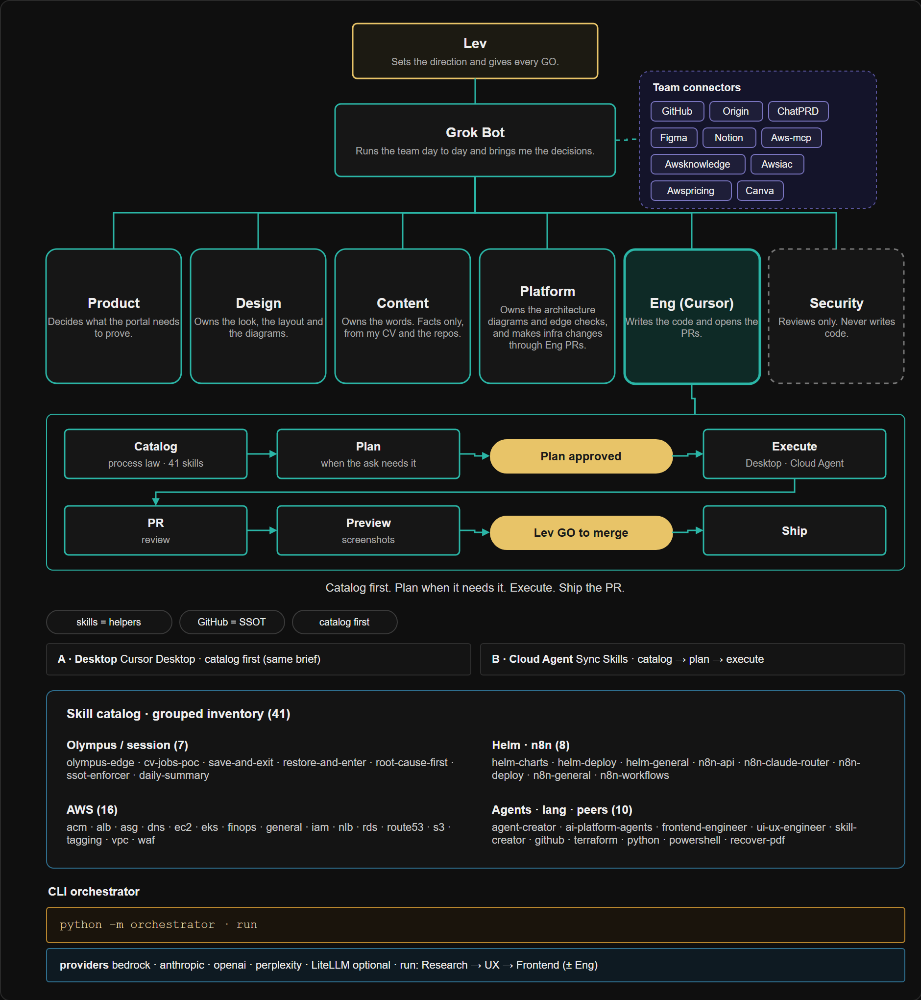

How I run the work
I run this portal like a small company of AI agents. They draft, review and build. I approve every step, and no code reaches the site until I've looked at it.
One human, one orchestrator, six seats.
Nothing merges without my GO.

-
A five-step security and config hardening: 19 PRs across 6 repos. Each step merged only after my GO.
Full trail
D: ai-platform #32, infrastructure #13 (private), llm-cost #9 (private)
E: ai-platform #33, #34, infrastructure #14, #15, #16 (private), cicd #4 (private)
A: ai-platform #35, infrastructure #17 (private), llm-cost #10 (private), agent-api #22 (private)
B: ai-platform #36, llm-cost #11 (private)
C: ai-platform #37, llm-cost #12 (private), agent-api #23 (private), rag-service #3 (private)
-
Rolled out one service at a time, each behind green tests and a health check. PRs in private repos.
-
A secret scanner flagged a test file. We fixed the cause, so test data is now built at runtime and the code holds nothing that looks like a secret.
- GitHub is the source of truth.
- Find the root cause before fixing.
- Review screenshots, not just diffs.
Diagram source: olympus-agent-company-cursor-v5.drawio · grouped inventory 7+16+8+10